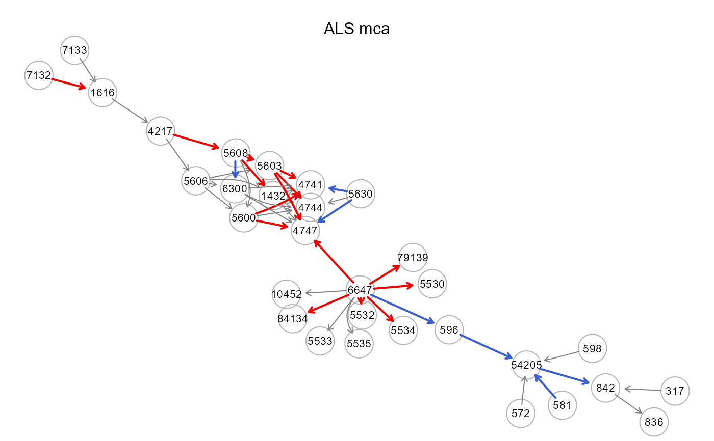

Implements various data trasformation methods with optimal scaling for ordinal or nominal data, and to help relax the assumption of normality (gaussianity) for continuous data.
transformData(x, method = "npn", ...)A matrix or data.frame (n x p). Rows correspond to subjects, and columns to graph nodes.
Trasform data method. It can be one of the following:
"npn" (default), performs nonparanormal(npn) or semiparametric Gaussian copula model (Liu et al, 2009), estimating the Gaussian copula by marginally transforming the variables using smooth ECDF functions. The npn distribution corresponds to the latent underlying multivariate normal distribution, preserving the conditional independence structure of the original variables.
"spearman", computes a trigonometric trasformation of Spearman rho correlation for estimation of latent Gaussian correlations parameter of a nonparanormal distribution (Harris & Dorton (2013), and generates the data matrix with the exact same sample covariance matrix as the estimated one.
"kendall", computes a trigonometric trasformation of Kendall tau correlation for estimation of latent Gaussian correlations parameter of a nonparanormal distribution (Harris & Dorton (2013), and generates the data matrix with the exact same sample covariance matrix as the estimated one.
"polychoric", computes the polychoric correlation matrix and generates the data matrix with the exact same sample covariance matrix as the estimated one. The polychoric correlation (Olsson, 1974) is a measure of association between two ordinal variables. It is based on the assumption that two latent bivariate normally distributed random variables generate couples of ordinal scores. Tetrachoric (two binary variables) and biserial (an ordinal and a numeric variables) correlations are special cases.
"lineals", performs optimal scaling in order to achieve linearizing transformations for each bivariate regression between pairwise variables for subsequent structural equation models using the resulting correlation matrix computed on the transformed data (de Leeuw, 1988).
"mca", performs optimal scaling of categorical data by Multiple Correspondence Analysis (MCA, a.k.a homogeneity analysis) maximizing the first eigenvalues of the trasformed correlation matrix. The estimates of the corresponding structural parameters are consistent if the underlying latent space of the observed variables is unidimensional.
Currently ignored.
A list of 2 objects is returned:
"data", the matrix (n x p) of n observations and p transformed variables or the matrix (n x p) of simulate observations based on the selected correlation matrix.
"catscores", the category weights for "lineals" or "mca" methods or NULL otherwise.
Nonparanormal trasformation is computationally very efficient
and only requires one ECDF pass of the data matrix. Polychoric correlation
matrix is computed with the lavCor() function of the lavaan
package. Optimal scaling (lineals and mca) is performed with the
lineals() and corAspect() functions of the aspect
package (Mair and De Leeuw, 2008). To note, SEM fitting of the generate data
(fake data) must be done with a covariance-based method and bootstrap SE,
i.e., with SEMrun(..., algo="ricf", n_rep=1000).
Liu H, Lafferty J, and Wasserman L (2009). The Nonparanormal: Semiparametric Estimation of High Dimensional Undirected Graphs. Journal of Machine Learning Research 10(80): 2295-2328
Harris N, and Drton M (2013). PC Algorithm for Nonparanormal Graphical Models. Journal of Machine Learning Research 14 (69): 3365-3383
Olsson U (1979). Maximum likelihood estimation of the polychoric correlation coefficient. Psychometrika, 44(4), 443-460.
Mair P, and De Leeuw J (2008). Scaling variables by optimizing correlational and non-correlational aspects in R. Journal of Statistical Software, 32(9), 1-23.
de Leeuw J (1988). Multivariate analysis with linearizable regressions. Psychometrika, 53, 437-454.
#... with continuous ALS data
graph<- alsData$graph
data<- alsData$exprs; dim(data)
#> [1] 160 318
X<- data[, colnames(data) %in% V(graph)$name]; dim(X)
#> [1] 160 31
npn.data<- transformData(X, method="npn")
#> Conducting the nonparanormal transformation via shrunkun ECDF...done.
sem0.npn<- SEMrun(graph, npn.data$data, algo="cggm")
#> GGM (de-biased nodewise L1) solver ended normally after 23 iterations
#>
#> deviance/df: 11.1374 srmr: 0.288874
#>
mvnS.data<- transformData(X, method="spearman")
#> Simulating gaussian data via Spearman correlations...done.
sem0.mvnS<- SEMrun(graph, mvnS.data$data, algo="cggm")
#> GGM (de-biased nodewise L1) solver ended normally after 23 iterations
#>
#> deviance/df: 11.90066 srmr: 0.2908674
#>
mvnK.data<- transformData(X, method="kendall")
#> Simulating gaussian data via Kendall correlations...done.
sem0.mvnK<- SEMrun(graph, mvnK.data$data, algo="cggm")
#> GGM (de-biased nodewise L1) solver ended normally after 23 iterations
#>
#> deviance/df: 15.58564 srmr: 0.4082966
#>
#...with ordinal (K=4 categories) ALS data
Xord <- data.frame(X)
Xord <- as.data.frame(lapply(Xord, cut, 4, labels = FALSE))
colnames(Xord) <- sub("X", "", colnames(Xord))
mvnP.data<- transformData(Xord, method="polychoric")
#> Simulating gaussian data via polychoric correlations...done.
sem0.mvnP<- SEMrun(graph, mvnP.data$data, algo="cggm")
#> GGM (de-biased nodewise L1) solver ended normally after 23 iterations
#>
#> deviance/df: 23.74632 srmr: 0.3171873
#>
#...with nominal (K=4 categories) ALS data
mca.data<- transformData(Xord, method="mca")
#> Conducting the first solution of Multiple Correspondence Analysis...done.
sem0.mca<- SEMrun(graph, mca.data$data, algo="cggm")
#> GGM (de-biased nodewise L1) solver ended normally after 23 iterations
#>
#> deviance/df: 10.20209 srmr: 0.3175633
#>
mca.data$catscores
#> $`317`
#> score
#> 1 -0.1962657
#> 2 -0.2617196
#> 3 -0.1722545
#> 4 4.6708724
#>
#> $`572`
#> score
#> 1 -1.56811059
#> 2 -0.01214174
#> 3 -0.39796571
#> 4 2.17855892
#>
#> $`581`
#> score
#> 1 -0.5830986
#> 2 -0.3508265
#> 3 0.6334362
#> 4 3.9618753
#>
#> $`596`
#> score
#> 1 -0.37120214
#> 2 -0.32350875
#> 3 0.03534731
#> 4 4.98964541
#>
#> $`598`
#> score
#> 1 -0.4275410
#> 2 -0.3000455
#> 3 1.6425919
#> 4 9.0188630
#>
#> $`836`
#> score
#> 1 -0.8246498
#> 2 0.9622589
#> 3 -1.0752097
#> 4 0.9484153
#>
#> $`842`
#> score
#> 1 -0.37629484
#> 2 -0.87079806
#> 3 -0.05751661
#> 4 2.71162665
#>
#> $`54205`
#> score
#> 1 -4.2248124
#> 2 -0.3278173
#> 3 0.2640036
#> 4 0.4608450
#>
#> $`1616`
#> score
#> 1 -0.2933227
#> 2 -0.5602894
#> 3 1.0761805
#> 4 3.6211774
#>
#> $`79139`
#> score
#> 1 -3.8618504
#> 2 0.3795132
#> 3 0.1963661
#> 4 0.2805683
#>
#> $`5606`
#> score
#> 1 -0.7623373
#> 2 -0.4419482
#> 3 1.0495265
#> 4 3.5296781
#>
#> $`5608`
#> score
#> 1 -6.55312157
#> 2 -1.37203915
#> 3 0.06807267
#> 4 0.97343682
#>
#> $`4217`
#> score
#> 1 -2.47120556
#> 2 0.09442145
#> 3 0.50146382
#> 4 2.10891397
#>
#> $`5600`
#> score
#> 1 -7.3048616
#> 2 -1.9849719
#> 3 0.3058562
#> 4 0.1420784
#>
#> $`6300`
#> score
#> 1 1.5586231
#> 2 -0.7581470
#> 3 -0.1197511
#> 4 2.3544993
#>
#> $`5603`
#> score
#> 1 -5.3934562
#> 2 -2.6648240
#> 3 0.2065484
#> 4 0.2501853
#>
#> $`1432`
#> score
#> 1 -4.8281167
#> 2 -0.5646018
#> 3 0.5355894
#> 4 0.4203385
#>
#> $`4744`
#> score
#> 1 -5.9814189
#> 2 -2.7263541
#> 3 0.1956457
#> 4 0.2854548
#>
#> $`4747`
#> score
#> 1 -5.2331098
#> 2 -4.5697151
#> 3 -0.5415581
#> 4 0.2758942
#>
#> $`4741`
#> score
#> 1 -5.31340342
#> 2 -4.63982140
#> 3 -0.06801511
#> 4 0.31611824
#>
#> $`5530`
#> score
#> 1 -4.5208030
#> 2 -3.2836035
#> 3 -0.1797704
#> 4 0.3356702
#>
#> $`5532`
#> score
#> 1 -4.75775317
#> 2 -1.77981428
#> 3 0.05365221
#> 4 0.38187879
#>
#> $`5533`
#> score
#> 1 1.1082106
#> 2 -0.4455077
#> 3 0.9706363
#> 4 -1.5709647
#>
#> $`5534`
#> score
#> 1 -5.22236671
#> 2 -3.28835298
#> 3 -0.04944201
#> 4 0.35114642
#>
#> $`5535`
#> score
#> 1 -5.0434670
#> 2 -1.9436026
#> 3 0.4107327
#> 4 0.3970010
#>
#> $`5630`
#> score
#> 1 -0.5501326
#> 2 -0.1669097
#> 3 1.1752097
#> 4 6.3028266
#>
#> $`6647`
#> score
#> 1 -5.0962196
#> 2 -0.7961947
#> 3 0.3901020
#> 4 0.1976048
#>
#> $`7132`
#> score
#> 1 -0.9298468
#> 2 -0.6719772
#> 3 0.4159697
#> 4 2.3462125
#>
#> $`7133`
#> score
#> 1 -0.7326115
#> 2 -0.6018502
#> 3 0.1549589
#> 4 2.8883909
#>
#> $`10452`
#> score
#> 1 -3.5037678
#> 2 -0.3863463
#> 3 0.5991077
#> 4 0.1937679
#>
#> $`84134`
#> score
#> 1 -5.3007012
#> 2 -0.5510670
#> 3 0.3288807
#> 4 0.2508747
#>
gplot(sem0.mca$graph, l="fdp", main="ALS mca")

# plot colored graphs
#par(mfrow=c(2,2), mar=rep(1,4))
#gplot(sem0.npn$graph, l="fdp", main="ALS npm")
#gplot(sem0.mvnS$graph, l="fdp", main="ALS mvnS")
#gplot(sem0.mvnK$graph, l="fdp", main="ALS mvnK")
#gplot(sem0.mvnP$graph, l="fdp", main="ALS mvnP")